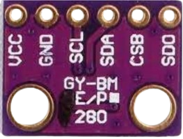

Quer saber mais sobre nosso equipamento? Abaixo está um breve resumo!

Flexbile Pcb
Responsável por conectar todo o circuito.

Sensor Max30100
Monitora a frequência cardíaca por meio da
iluminação e captação do
sangue quando bombeado.

Sensor Bmp280
Verifica a pressão e a
temperatura a partir da
conversão da suas
variações e converte em
sinais elétricos.